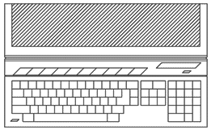
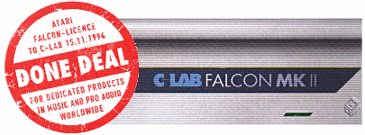
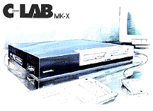

|
1992
- The design of the Atari Falcon is based loosely on the ST range of
systems. Software wise, the most obvious feature being the GEM
interface, was improved aesthetically to include 3D shading of windows
and icons, and upgraded to ensure the new features of the machine could
be accessed through GEM and TOS. Improvements were also made to
the desktop commands and range of available
options.
MultiTos was finally released to bring the
Atari computer range pre-emptive multi-tasking for the first time.
From a hardware point-of-view, the machine
was a huge technical advancement from the ST and TT range. Atari
had now increased the standard colour palette of the new VIDEL Video
processor to over 244,000 colours, and provided VGA screen
resolutions with up to 65,000 on screen. It was also decided to
add a degree of backward compatibility with the ST by adding the older
screen resolution options. Memory capacity was increased to a
maximum of 16Mb (14.2Mb working), compared to the theoretical 4Mb
maximum capacity of the ST/E.
Sound was important to the Atari range, but
suffered in the past from a low-cost, low-featured sound generator based
on the infamous YM-2149, which was seen as pretty basic even when the ST
first launched. Although the addition of MIDI ports on the ST/TT
put Atari in the driving seat as far as remote sound control was
concerned, internal sound features were always criticised. This
was rectified to a degree with the addition of PCM (Pulse Code
Modulation) sound features in the STE/TT, but it was still lacklustre in
comparison to the Amiga "Paula" or the newer sound systems emerging for
the PC.
A radical rethink to the internal sound gave
the Falcon not only the YM-2149 (mostly for compatibility reasons), but
additional DAC/ADC chips enabling 8 track, 16bit DMA (Direct memory
Access) with sampling rates up to 50 KHz. If you consider a CD
produces sound at up to 44Khz, this was a sound system with real
potential for professional musicians.
Of course, the real trick inside the Falcon
is the Motorola DSP (56001). The Digital Signal Processor was
designed primarily for sound manipulation, but it also could be used to
process complex instructions for use in voice communication and speech
synthesis. This particular chip had a clock speed of 32Mhz, in
addition to the Falcon's 16Mhz 68030 CPU. The Falcon also had a
direct connector port to talk directly to external devices via the DSP.
An internal direct connector slot was placed
on the motherboard to allow either a i286, i386 or i486 (or compatible)
CPU to be connected for direct DOS compatibility. This was never
really exploited commercially.
With an array of ports, including AppleTalk
LAN, SCSI 2 and the trademark MIDI ports, all for under $1000.00.
The Falcon seemed to secure the future of Atari's computer division, but
unfortunately, the Falcon never really got the support from its parent
company.
The Falcon was also slightly flawed by the
choice to use a 16Mhz CPU, and additionally, by the 16-Bit data bus.
This was all going to be rectified by a new Falcon030, called the
Microbox. It would use a similar sized motherboard with a 32-Bit
bus, and possibly a 32Mhz 68030. There was also talk of expansion
slots as seen on the latest 486 systems of the day. But they would
be for the Falcon040, which only got to the prototype stages before the
axe fell on the computer division.
The Falcon was released in the same style
chassis as the older ST/E range and this did little to impress users.
Put along-side an ST/E in a store, people couldn't tell the
difference because they looked so similar.
Atari were aware of the perception of their new machine in the old case,
and they set about designing a new chassis for their 030 and 040 Falcon
systems, unfortunately these were cancelled and never saw the light of
day. You can read more about these new cases by clicking below.
The
computer division were having trouble with budgets during this time, and
the only way to get the Falcon030 out the door was to use existing
components/suppliers,
perhaps if the Falcon was an initial success
a new case would have happened automatically?

Whatever the reasons, the Atari Falcon had a
tough job convincing people it was bigger and better, especially as it
looked the same as its little brother
the standard STE. Technically,
the Falcon030 was a powerhouse for its time
and it would have certainly
faired much better with its new case design and technical upgrades.
Today they are a valuable commodity for musicians, hobbyists and
collectors alike. The Atari Falcon was cancelled in 1993, and we
can only estimate that the production run was about
100,000 units
worldwide based on European sales (estimated by an Atari UK source at
~80,000). But the
system still had a some life left in it when Atari HQ got a phone call
in late 1994...

In November 1994, a German company
called C-Lab agreed worldwide licensing terms with Atari to produce the Falcon 030
once again, but under the C-Lab brand. Improving the sound system and utilising the same
motherboard manufacturer as Atari, C-Lab released the Falcon MK.II.
It was still the same specification except for the tweaks made to the
audio circuitry, and the increased capacity of the internal hard-drive
from the Atari standard 80Mb to a more respective 512Mb which was needed
for digital sound work (Initial C-Lab Falcon's were
called "MK1" and were simply rebranded Atari Falcon 030's from Atari
inventory).

It cost nearly £1999.00
(UK Sterling) for a MK.II, so
sales were always going to be limited to the professional musician
market.
In 1996 a second version was launched in a sleek
black box and separate keyboard and was called the MK.X, but this unit
soon disappeared, and with it all traces of the mighty Falcon.
|